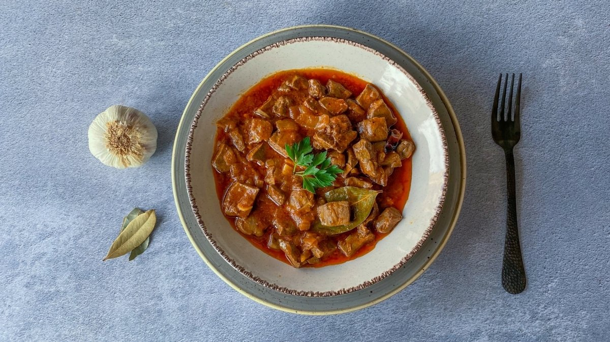
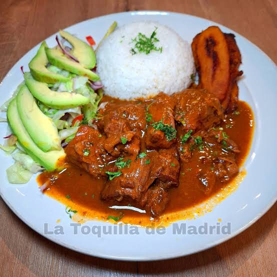
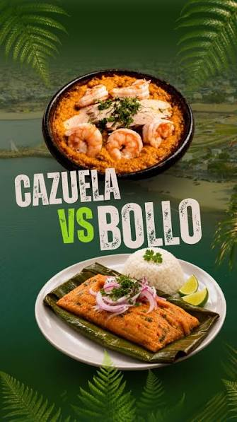
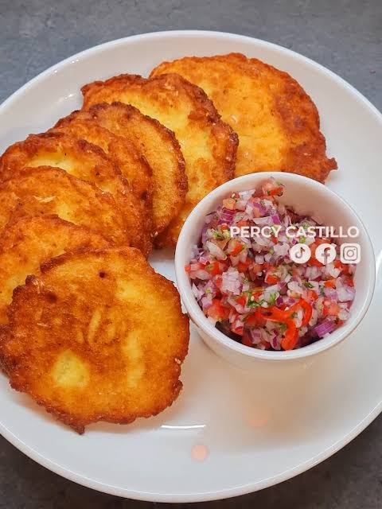
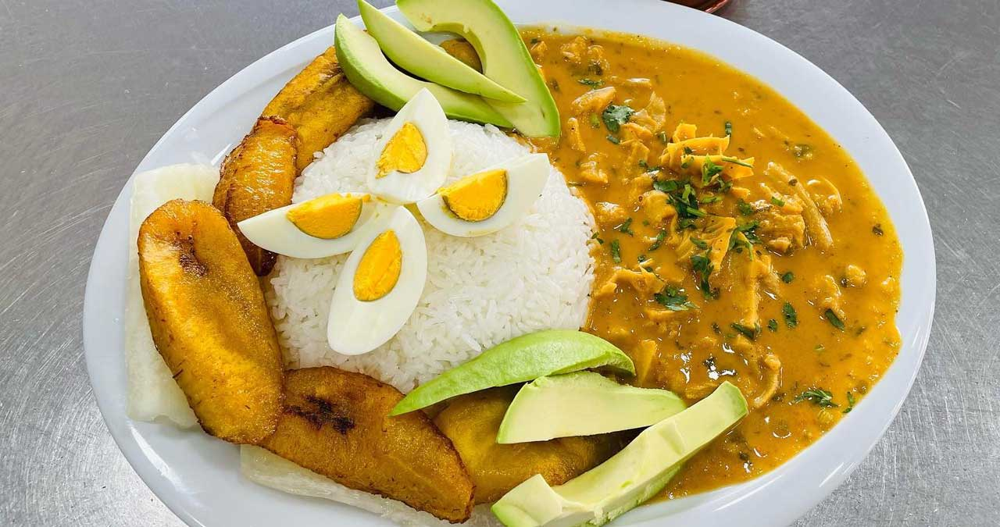

1. Breve descripción del cantón Palenque
Palenque es un cantón perteneciente a la provincia de Los Ríos, ubicado en la región Costa del Ecuador. Su cabecera cantonal lleva el mismo nombre.
Se caracteriza por sus tierras fértiles, sus paisajes naturales y sus actividades agrícolas. Entre sus principales productos se encuentran el arroz, cacao, maíz y otros cultivos.
Palenque conserva importantes tradiciones de la cultura montubia, que se manifiestan en su gastronomía, festividades, costumbres y actividades campesinas.
La agricultura y la ganadería son actividades importantes para la economía de sus habitantes.
2. Parroquias del cantón Palenque
El cantón Palenque tiene como cabecera cantonal a la ciudad de Palenque.
Parroquia urbana
- Palenque.
Parroquias rurales
El cantón no cuenta con parroquias rurales en su división político-administrativa.
Su territorio comprende diferentes comunidades y recintos rurales que desarrollan actividades agrícolas y ganaderas.
3. Platos de comida típicos
La gastronomía de Palenque, Los Ríos (Ecuador) destaca por su rica tradición criolla y de la costa ecuatoriana. Entre sus principales platos típicos se encuentran:
Arroz con menestra y carne asada

Un clásico de la región con jugosa carne a la parrilla.
Chanfaina

Guiso tradicional preparado con vísceras.
Secos y guisados criollos

Como el seco de gallina, seco de pato, seco de chancho y chancho con maní.
Bollo y cazuela de pescado

Preparaciones costeñas a base de verde y pescado fresco.
Torreja de choclo

Frituras hechas con maíz tierno.
Guatita

Tradicional plato de menudo con salsa de maní.
4. Lugares turísticos del cantón Palenque
Río Vinces
Es un recurso natural relacionado con el entorno del cantón. Sus alrededores permiten apreciar paisajes fluviales y conocer la importancia de los ríos para las comunidades de la provincia.
Balnearios naturales
Los espacios recreativos relacionados con los ríos y las fuentes de agua son visitados por personas que desean disfrutar de la naturaleza y compartir con familiares y amigos.
Parque central de Palenque
Es un espacio público donde los habitantes pueden descansar, reunirse y disfrutar de las actividades cotidianas del cantón.
Centro de Palenque
Permite conocer los establecimientos comerciales, espacios públicos y las actividades de sus habitantes. Es un lugar importante para conocer la vida urbana del cantón.
Comunidades agrícolas
Las comunidades rurales permiten conocer los cultivos, las actividades del campo y las tradiciones montubias que forman parte de la identidad cultural de Palenque.
Estos lugares son importantes porque permiten disfrutar del entorno natural, conocer las costumbres locales y fomentar el turismo comunitario.
Para consultar ubicaciones puedes visitar:
Consultar lugares turísticos de Palenque5. Hoteles donde alojarse en Palenque
Las personas que visitan Palenque pueden consultar establecimientos de alojamiento dentro del cantón y en ciudades cercanas de la provincia de Los Ríos.
Para encontrar opciones disponibles puedes utilizar el siguiente enlace:
Consultar hoteles en PalenqueAntes de elegir un alojamiento se recomienda verificar los precios, servicios, ubicación y disponibilidad.
6. Alcalde del cantón Palenque
Jordy Carriel Navarrete.
El alcalde es la máxima autoridad del Gobierno Autónomo Descentralizado Municipal de Palenque.
Entre sus principales responsabilidades están administrar los recursos municipales, gestionar obras públicas, mejorar los servicios y promover el desarrollo del cantón.
7. Población del cantón Palenque
La población de Palenque está distribuida entre la cabecera cantonal y sus diferentes comunidades rurales.
Para conocer la cantidad exacta de habitantes se debe consultar el Censo de Población y Vivienda de 2022 del Instituto Nacional de Estadística y Censos del Ecuador.
La información poblacional permite conocer el crecimiento del cantón y ayuda a planificar servicios de salud, educación y obras públicas.
8. Mapa del cantón Palenque
En el siguiente mapa puedes observar la ubicación geográfica del cantón Palenque, perteneciente a la provincia de Los Ríos, Ecuador.